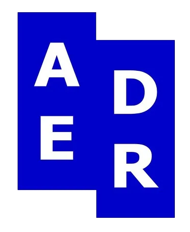
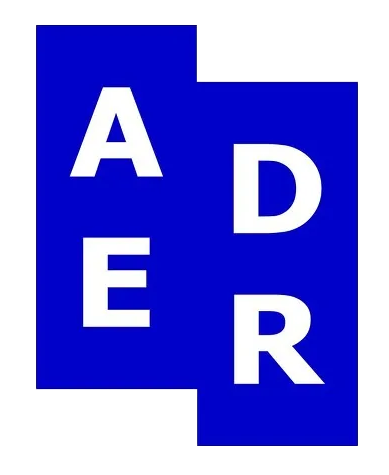

ADER ERROR는 미적 표현을 뜻하는 ‘Aesthetic Drawing’에 'er'을 합친 단어로
‘다양한 콘텐츠를 제작, 편집하고 공유하는 사람이 모인 집단’이라는 뜻입니다.
ADER의 부제인 ERROR는 말 그대로 오류를 뜻하는데 모든 결과는 반복되는 오류
끝에 나온다고 생각해 이를 성장의 의미로 사용했습니다.
ADER ERROR는 ERROR를 통해 하나의 콘텐츠를 더 나은 존재로 표현합니다.
 

ADER는 기존의 패션의 카테고리에서 벗어나 모든 장르를 편집하여 독창적인
코어 스타일을 창조합니다. 복종 믹스, 변형, 왜곡을 통해 실루엣을 창조하는
방식으로 복장의 경계를 허물고 조합하여 새로운 문화를 시각화 합니다.
기존의 형태를 왜곡하는 행위로 ADER의 시즌 로고 아트워크가 탄생 하였으
며, 의복에서도 왜곡의 요소를 활용하여 다채로운 경험을 제공하고 있습니다.
장르, 성별의 경계를 허물고 어느 한 분야에서 열정적으로 자신을 표현하는
프로페셔널리스트로서의 청춘들의 모습을 지향하며 기존에 정해진 개념을
재정립하고 다양한 장르의 믹스를 통해 탄생한 새로운 개념의 ‘뉴 컬처’로
주체적인 문화 흐름을 보여줍니다.
블루 마크는 아더 브랜드의 가품 근절을 통해 소비자를 보호하고 정품인증과 청렴한
문화 의식을 알리기 위한 문화 캠페인입니다. 이를 위해 만들어진 ‘블루 마크 택’은
아더가 제조한 정식 제품임을 보증하는 역할을 합니다.
메인컬러인 블루는 ‘청렴함, 순수함, 오리지널리티’의 의미를 함축하고 있습니다.